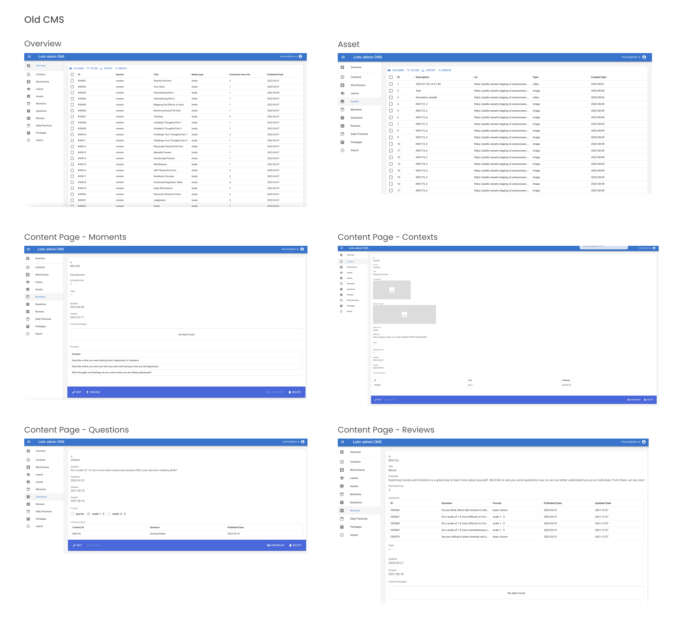
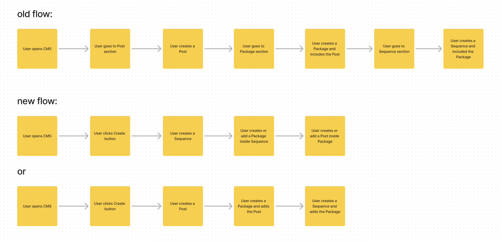
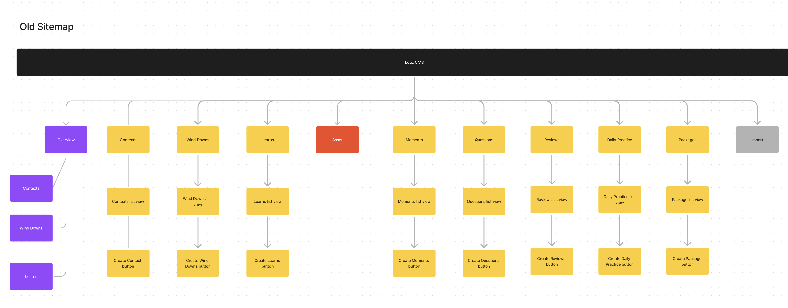
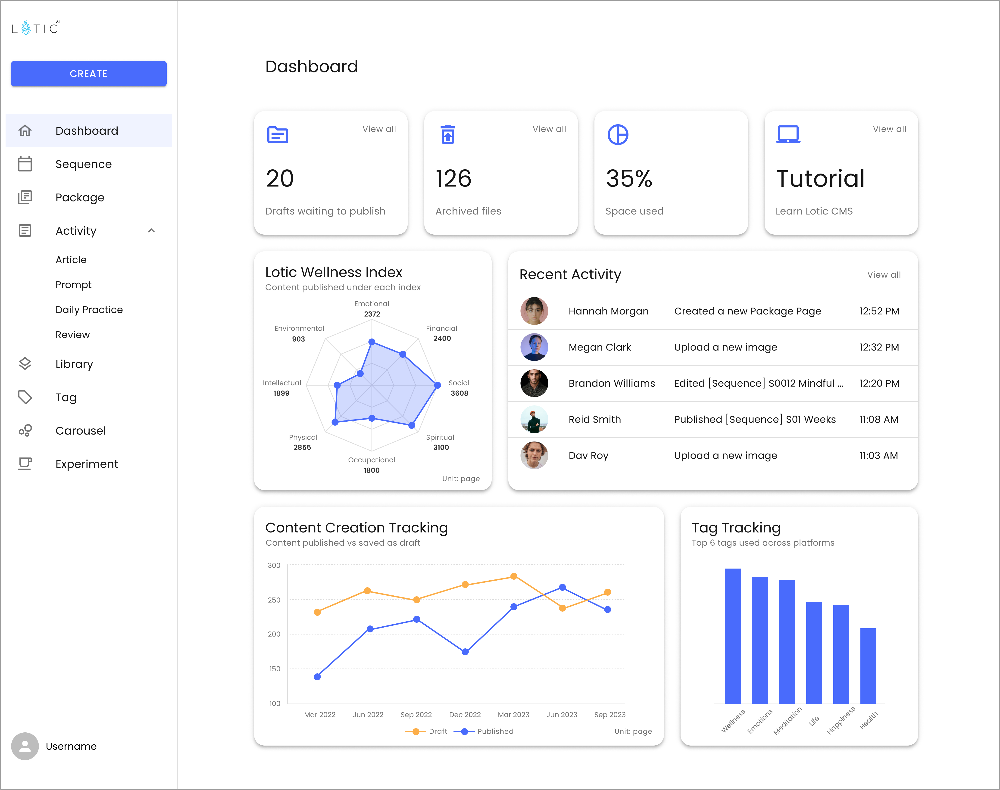
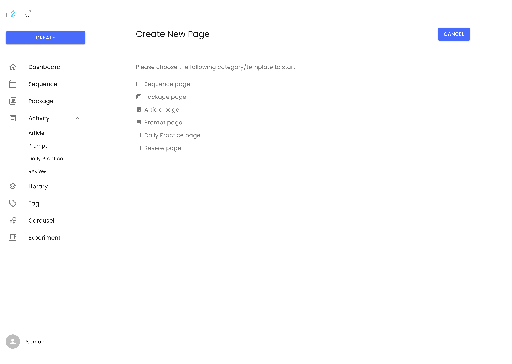
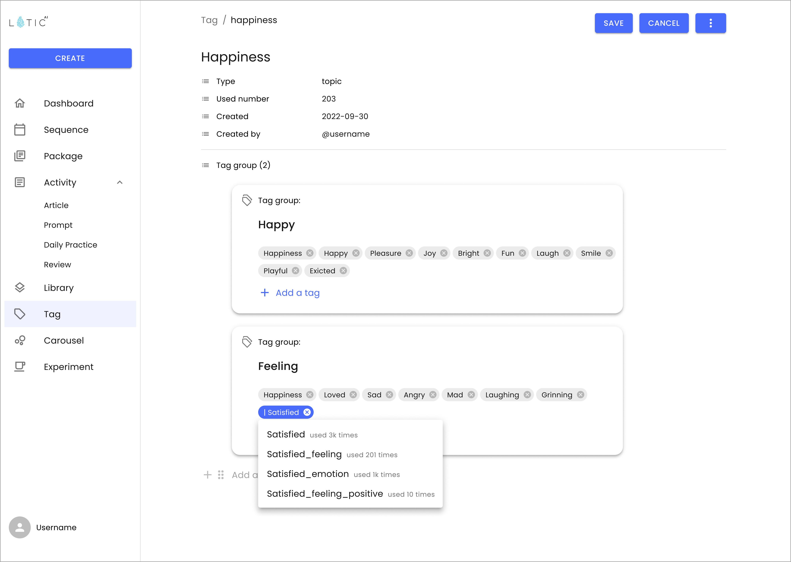

Redesigning Lotic CMS: How to enhance flexibility and streamline Content Management
Lotic CMS Case Study | üìçProduct design at Lotic.ai
In this case study, I want to share how we solved the problem of empowering creators to streamline and simplify their content management on the Lotic CMS platform.
To comply with my non-disclosure agreement, I have omitted and obfuscated confidential information in this case study. All information in this case study is my own and does not necessarily reflect the views of Lotic.ai.
My role and the team
As the sole designer on this project, I collaborated closely with the product, development, content, and data science teams. I led the project from concept to execution, taking on key responsibilities such as defining the problem and project scope, brainstorming and prioritizing features, designing the visual interface, and conducting user testing.
Sara Scheuermann is my designer manager who provided support and design feedback throughout the whole project. And I also got great support from the team:
- Stephanie Padula - Senior Director of Product Management
- Andrew Linzie - Product Manager
- Michael Chacon - Chief Architecture Officer & Director of Engineering
- Moody Moral - Senior Content Creator
- Gavin Patient - Senior Data Scientist
Context
Lotic CMS is a content management system where team controls all content deployment across all Lotic platforms. Currently, it serves as an internal tool for the in-house content and data science teams, with future plans to expand its capabilities to external business partners looking to distribute their content across the Lotic ecosystem.
You might wonder why Lotic decided to build its own CMS tool instead of opting for a third-party solution. The reasons are multifaceted. A primary factor is that third-party CMS tools cannot support the complex data structure that Lotic uses in its backend. Integrating with these tools would significantly increase both cost and complexity. Additionally, Lotic aims to use its CMS as a tool for data science team to manage tagging system for AI algorithm recommendation — something third-party tools couldn't adequately support.
At this stage, Lotic's primary users are the content team, whose daily tasks involve creating content, organizing it into various packages, and scheduling deployments to Lotic users.

Objective
However, the content team found their daily experience with the current Lotic CMS to be frustrating and challenging, making it difficult to complete their tasks efficiently. This poor user experience slowed down the content deployment process. As a result, the goal of this project was to redesign the Lotic CMS and significantly improve the user experience, in other words, to create a streamlined and simplified user experience.
Success metrics
For this project, we identified two key success metrics: user satisfaction and content deployment speed. User satisfaction, measured through surveys, will indicate whether we've successfully enhanced the user experience. Content deployment speed will reveal if the redesign has effectively accelerated the content deployment process.
Solve the problem:
Initial feelings
When I first started the project, the PM handed me a PRD packed with an overwhelming number of requests from various teams, many of which had vague even conflicting requirements. The list included numerous issues the product team wanted to address, along with several missing features that needed to be added. However, with a tight deadline and limited resources, it was clear we couldn’t tackle everything, making it difficult to determine where to begin.
The old CMS
After auditing the old CMS website, it quickly became evident why users struggled with it. The UI was outdated. There are multiple sections displaying the same content causing confusion. The navigation was unclear, making it difficult for users to grasp the nesting concepts and how they related to different Lotic platforms. Additionally, the system lacked flexibility, forcing users to go through unnecessary steps to rearrange content.
Kickoff meeting to get all stakeholders aligned
Given the numerous requests from different teams with unclear requirements, I organized a project kickoff meeting with all major stakeholders. The goal was to align everyone and clarify the vague and even conflicting requirements. The meeting was very successful: we resolved conflicting requests and clarified others. Later project kickoff meetings became a standard practice in Lotic's product development process.
One example of the conflicting requests: Product team wanted to remove ID of a content post, Content team wanted the ability to edit ID and Data Science team insisted on retaining system-generated IDs.
Another example of conflicting requests: The content team wanted to continue adding images via external links, while the product team preferred to avoid external links due to potential unpredictable behavior in the backend.
Dive deeper in each individual interviews
Following the kickoff meeting, I conducted a series of individual interviews with each stakeholder and CMS users, including the content and data science teams. These interviews helped me understand the rationale behind each request and allowed me to further refine the project requirements.
User request:
"Add more flexibility for users to create
content within a nested structure."
Rationale behind:
"When creating content, users
typically start by creating packages and sequences (higher-level
content) before filling in or reusing existing individual posts
(lower-level content). However, the current CMS only allows users
to edit in the opposite order."
User request:
"Allow users to edit the ID in the
CMS."
Rationale behind:
"Before entering anything into the
CMS, I prepare everything in a spreadsheet where all items are
created and organized. However, since the CMS generates IDs
automatically, I have to manually update the IDs in the
spreadsheet, which is time-consuming." — The user isn't
actually asking to edit the ID; instead, they want to ensure both
systems are aligned with the same numbers.
User request:
“Allow users to open multiple pages at the same
time.”
Rationale behind:
“I want to open each page entirely but be
able to quick navigate through related pages.” — The user actually
is asking to navigate through pages more easily and flexibly.
Nested data structure in the backend
One of the key challenges in this project was designing a system that could support the complex data structure in the backend. Since Lotic CMS serves as the platform for content deployment across all other Lotic platforms, it needed to align with how the data is organized.
Through discussions with the data science team, I learned that the data is structured into three hierarchies: Sequence > Package > Post.
- a Post represents the individual content consumed by the end user,
- a Package is a collection of Posts for a single day,
- a Sequence is the assignment of content across different dates to the same user.
One major issue with the old CMS was its lack of intuitiveness in showing how users create content across these different hierarchies which ultimately hindered a streamlined user experience.
Ideation
At the same time, I want to take a step back and ask a more fundamental question first:
“What are the daily tasks users engage in that have the greatest impact on their overall experience?”
In order to further explore this question, I listed some user stories below based on the user interviews:
As a user
- I want to view last changes made, last context, who & when did what on dashboard
- I want to view limitations/usage on data storage
- I want like to check warnings on unpublished stuff on Dashboard
- I want to create a context page
- I want to edit text for context
- I want to insert image into text for context
- I want to check the text formatting, alignment, text weight and text color
- I want to preview the content without publishing
- I want to easily add media asset (video or audio) into context page
- I want to edit the id
- I want to sort the id in alphabetic/numeric order
- I want to check the draft that has not been published and assigned
- I want to open different context pages at the same time and navigate easily through them
- I want to replace a video file without having to delete it
- I want to have a read-along feature for text
- I want to easily check whether a page is a draft or not
- I want to easily tell the linked packages and be able to click it
- I want to check how the content looks like on mobile
- I want to see context, wind down, learn in one place and put under different categories
- I want to choose different product UI to view the content layout
- I want to edit text and image in an easy way
- I want to link multiple pages to create a context post
- I want to have more entity types
- I want to also upload subtitle files for our videos. Similar to Youtube, how it uses .srt files.
- I want to upload media asset from local drive
- …
Competitor Analysis
I conducted a competitor analysis on the leading CMS products in the market, including Web CMS, WordPress, HubSpot CMS Hub, WiX, Ghost, Strapi, and Hygraph. My research focused on the following key aspects:
- Core features and functionality
- Interface design
- Integration between the CMS and various platforms
Throughout the research, I paid particular attention to how these platforms structure their interfaces to give user a streamlined experience, like allowing users to easily create, manage, and deploy content. Here are some insights I gained from the competitor analysis:
- Most of the platforms only support a single layer of content, meaning they do not accommodate a nested structure. As a result, they offer little guidance on how to manage the hierarchical data.
- They addressed the flexibility challenge by introducing ‘Blocks’—a versatile editing unit that supports multiple media types.
- Some features like the live content preview function will facilitate the content creation and deployment speed.
Information Architecture
Pain points
By gathering all the insights from research and interviews, I had a brainstorming meeting with the product manager to prioritize the key pain points. Here are the top 3 pain points that we agreed on:
-
hierarchy of data is confusing and it isn’t reflected clearly in
CMS.
e.g. flat structure vs content in different levels (Sequence > Package > Post)
- The current content creation flow only supports one direction in the data hierarchy: Post → Package → Sequence, whereas the content team prefers the flow to follow Sequence → Package → Post which is not supported.
- lack flexibility in editing the content.
User flow and site map
I analyzed the existing user flow, which helped me identify key pain points and inefficiencies in the content management process. It also revealed why users were limited to creating content in only one direction (Post → Package → Sequence). I then redesigned the flow to streamline the process, making content creation, management, and deployment more intuitive and efficient while accounting for the complex nested structure. This new user flow supports bi-direction creation and has reduced steps to create the content in the nested structure.
Here is a comparison between old and new user flow of how user create content in nested structure:
At the same time, to improve navigation and content organization, I also analyzed the existing site map, identifying areas of complexity and redundancy. Here is a comparison between the old and new site map:

Wireframe and user testing
Creating a wireframe without focusing on detailed UI design allows me to quickly develop the layout, prioritizing functionality over aesthetics. Thus I was able to conduct moderated user testing on its prototype and gather user feedback early in the process.

One of the key pieces of feedback I received from the user testing was that users greatly appreciated the flexibility to create content in either direction—whether starting from a lower level and building up (Post → Package → Sequence) or beginning at a higher level and working down (Sequence → Package → Post). This flexibility allowed users to tailor the content creation process to their specific needs and workflows, making the system more intuitive and efficient for diverse use cases.
Visual designs
With the new design system I created (details provided below), I was able to proceed with designing the high-fidelity mockups.
The new CMS is organized into the following sections:
Part 1 - Dashboard: A new section where users can monitor incomplete drafts awaiting publication, track space usage, access tutorials, and view recent activities. I plan to discuss the design process for this page in a separate case study.
Part 2 - Content Creation Section: This area encompasses three content hierarchies—Sequence, Package, and Post (referred to as Activity in the new CMS).
In designing this section, I focused on providing users with greater flexibility to create content across different hierarchies.
a, A unified starting point
Users can now begin content creation from a single location—the "Create" button—rather than navigating to different sections. In the new CMS, all content, regardless of its level, is treated as a singular unit called a 'Page.' It aims to simplify the user experience and reduce the time required to create various types of content.
b, Support content creation in both directions
In the old CMS, users had to prepare all Activity-level content before they could aggregate it into Package and Sequence levels. The new CMS supports both directions, allowing users to start by setting up the Sequence page first, then create or select an existing Package, and finally create or choose the Activity/Post content. It is better aligned with user behavior, as revealed through user interviews.


c, Clear visual representation of data Hierarchies
The new CMS features multiple areas where the data hierarchy is visually represented, allowing users to easily understand the flow of created content. This provides a clear overview, helping users grasp the bigger picture without getting lost in the details.


d, Introduce ‘Block’ as the basic editing tool
In the new CMS, I introduced ‘Block’ which enables users to add and rearrange various types of media, such as text, images, and videos, with ease and flexibility.

Part 3 - Other sections to support requested features: Library, Tag, etc.
Design library
One of the key requests was to design a design system for the CMS website. After discussing with the engineering team, we decided to base the system on the Material UI library (MUI), customizing it to meet the specific needs of the CMS. The main challenge was ensuring that the CMS design system remained consistent with Lotic’s existing design system.
To ensure consistency across design systems while meeting the needs of the CMS, I took the following steps:
- Foundations: I adjusted typography, color schemes, spacing, and other elements of MUI to align with Lotic’s style guide.
- Custom Components: I developed customized pre-built components for the CMS, building on the foundation of MUI to suit its specific requirements.

Result
After the website went live, the following metrics were achieved:
- Increased User Satisfaction: User surveys indicated higher satisfaction with the new CMS.
- Improved Content Deployment Speed: The new CMS demonstrated a 40% increase in content deployment speed on average.
Learning
1, Tackling ambiguity
One of the biggest challenges in this project was navigating through ambiguity, especially at the beginning. I felt overwhelmed and even didn’t know where to start by reading the PRD filled with numerous vague and conflicting requests. By organizing a project kickoff meeting, conducting rounds of individual interviews with stakeholders and holding regular design reviews, I was able to clarify the requirements and align everyone on the same page.
2, Effective communication & stakeholder management
Throughout the project, clear and consistent communication was key to success. From collaborating closely with the product manager during brainstorming sessions to discussing technical requirements with the engineering and data science teams, effective communication played a crucial role in keeping everyone aligned. I’ve learnt the value of maintaining open communication across all teams involved in this project.
3, Complex data structure
Designing the CMS that supports a complex data hierarchy was a valuable learning experience to me. It was also my first time closely collaborating with the data science team to understand how data is structured in the backend, which greatly informed and improved the design.
Parting words
While working on this project, I really enjoyed collaborating within a cross-functional team, where diverse expertise and perspectives came together to create a great product. Here are some words from my team:
I’m very impressed with how detailed, organized and well thought out these are. I like the way that you did great research and the design is well supported by the research you’ve done. Nicely done, Chuchu!
from my design manager Sara
Chuchu is so good at taking so little information and put it into a very useful work.
from Mike, Chief Architecture Officer & Director of Engineering
Chuchu is the most organized person I’ve met at work.
from Alina, Director of content
Thank you for taking the time to read this case study. I’m happy to answer any questions or discuss further. Feel free to contact me via email or LinkedIn.